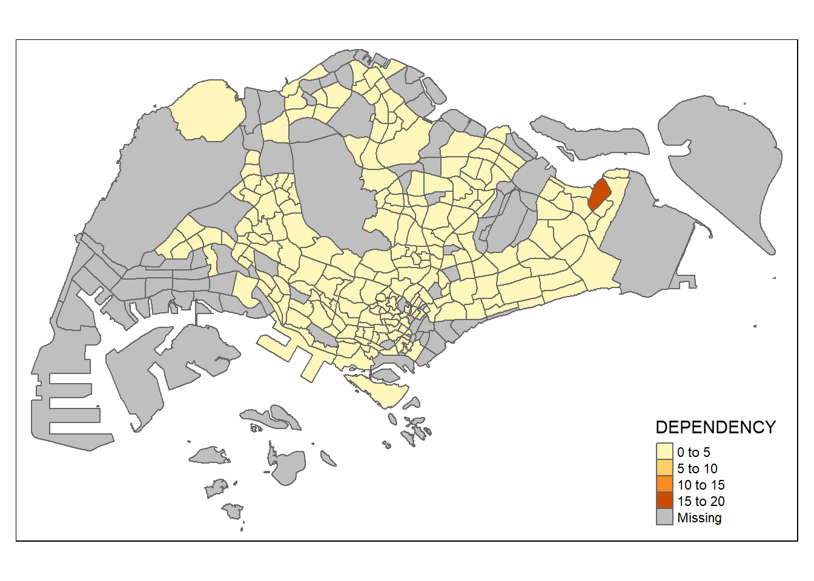
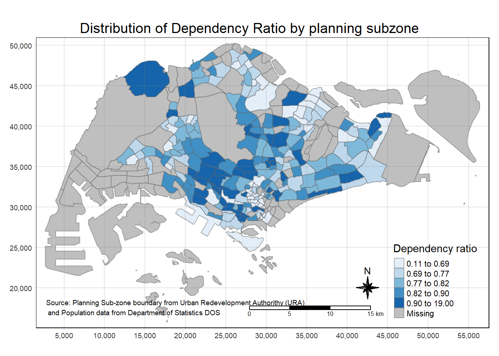
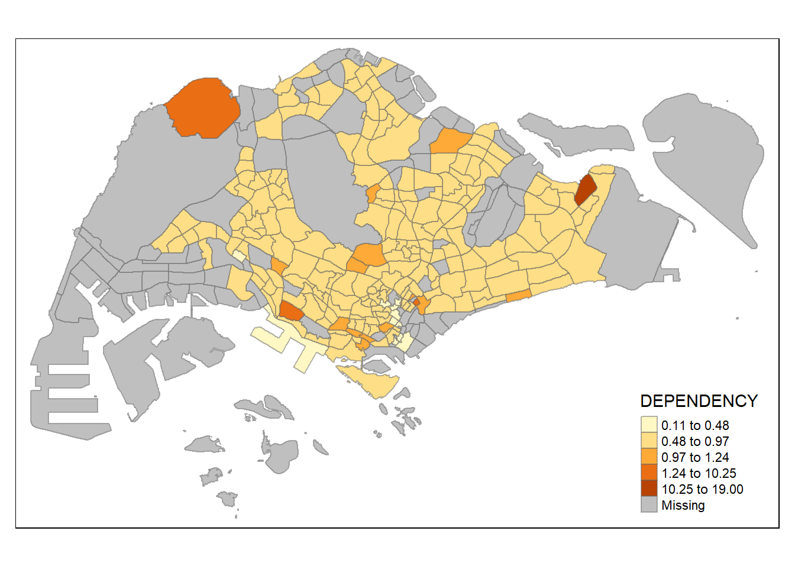
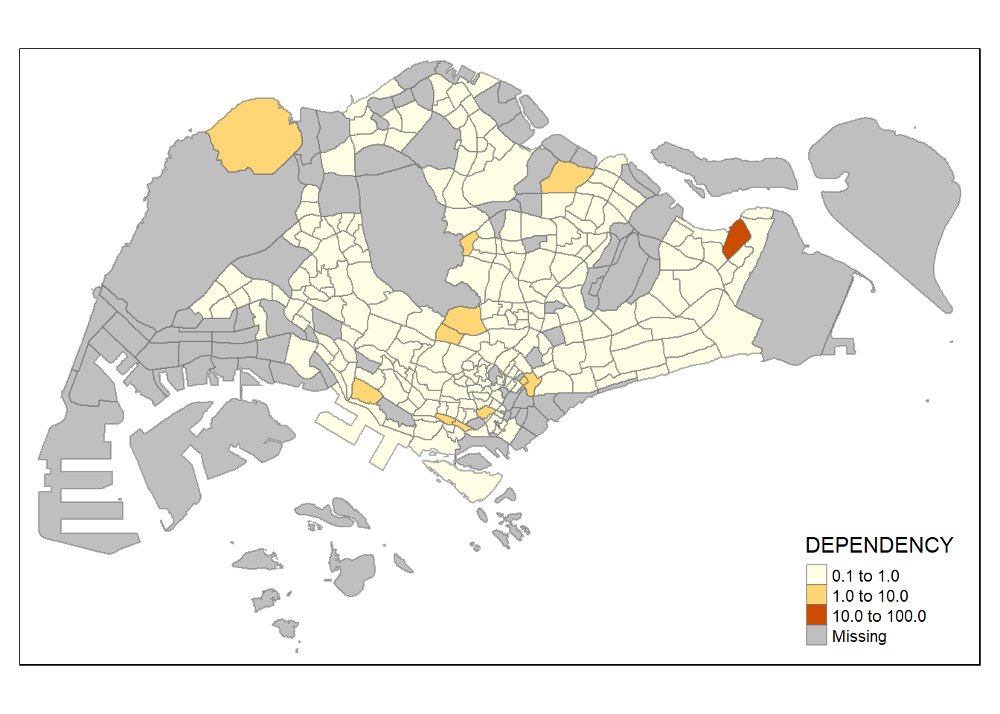
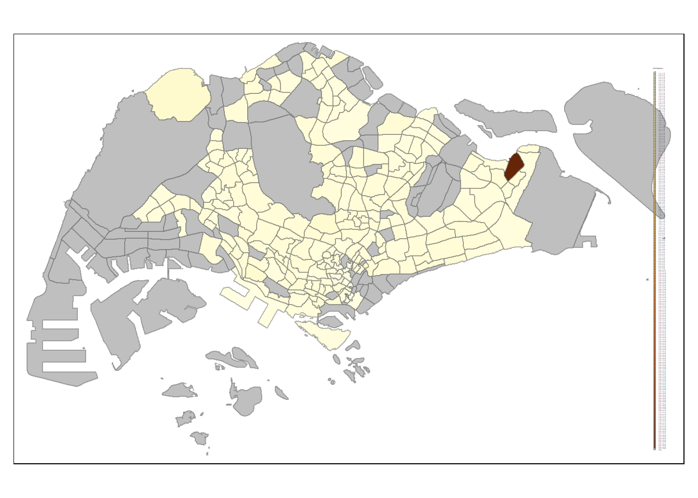
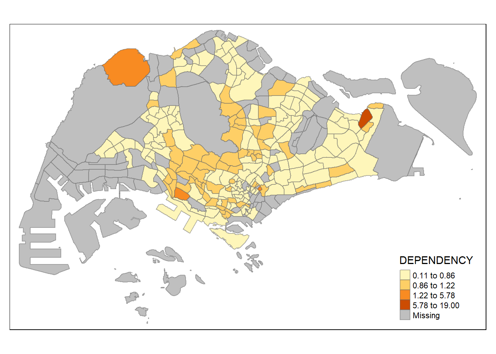
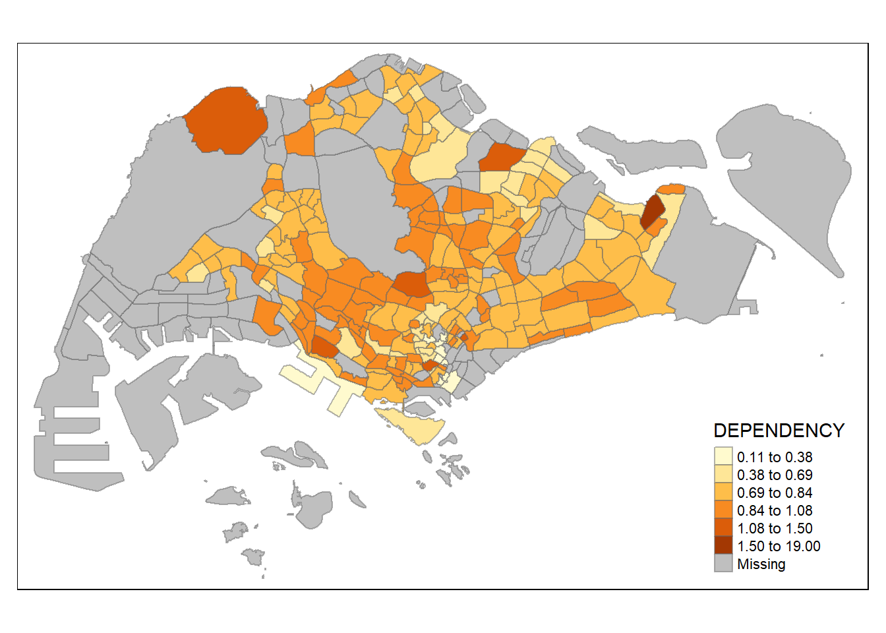
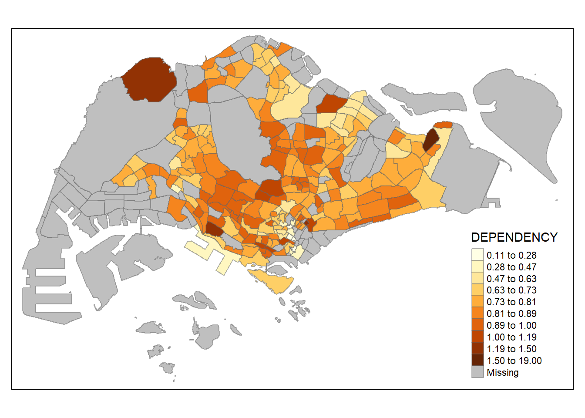
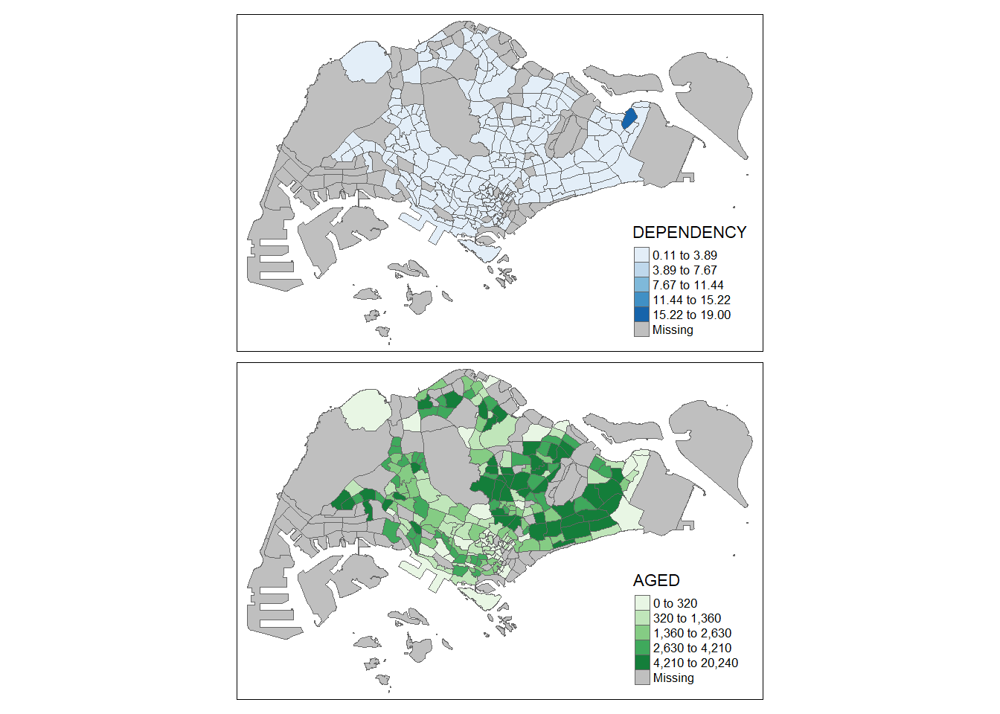
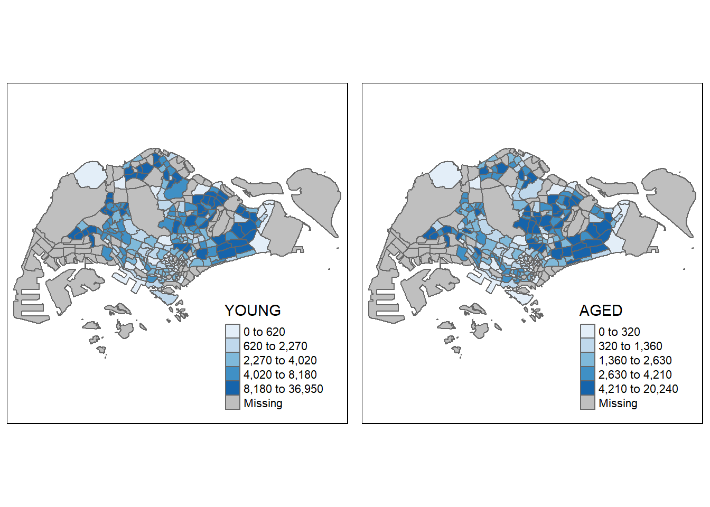

pacman::p_load(sf, tmap, tidyverse)Hands-on Exercise 2
2 Choropleth Mapping with R
2.1 Overview
In this page, I show how I had completed the Hands-on Exercise 2, on plotting choropleth maps using the tmap package. It includes the codes used, the graphs obtained as well as the insights gathered.
Choropleth mapping involves the symbolisation of enumeration units, such as countries, provinces, states, counties or census units, using area patterns or graduated colors.
2.2 Getting Started
The R packages used in this hands-on exercises were:
tmap for thematic mapping;
sf for importing, managing, and processing geospatial data, and
tidyverse (i.e. readr, tidyr, dplyr) for performing data science tasks such as importing, tidying, and wrangling data.
They were loaded into the R environment using the following code:
Student Note: This allowed for installation and loading, without needing to take a two-step process using install.packages() and library().
2.3 Importing Data
The following data sets were used in this hands-on exercise:
Singapore Residents by Planning Area / Subzone, Age Group, Sex and Type of Dwelling, June 2011-2020 from the Department of Statistics Singapore.
The data sets were placed under two sub-folders: geospatial (Master Plan Subzone Boundary) and aspatial (Residents). These two sub-folders are within the data folder of my Hands-on_Ex2 folder.
2.3.1 Importing Geospatial Data
The st_read() (under sf package) was used to import the geospatial data set: MP14_SUBZONE_WEB_PL, a polygon feature layer in ESRI shapefile format.
mpsz = st_read(dsn = "Hands-on_Ex2/data/geospatial",
layer = "MP14_SUBZONE_WEB_PL")Reading layer `MP14_SUBZONE_WEB_PL' from data source
`C:\jmphosis\ISSS624\Hands-on_Ex2\data\geospatial' using driver `ESRI Shapefile'
Simple feature collection with 323 features and 15 fields
Geometry type: MULTIPOLYGON
Dimension: XY
Bounding box: xmin: 2667.538 ymin: 15748.72 xmax: 56396.44 ymax: 50256.33
Projected CRS: SVY21Outcome:
Reading layer `MP14_SUBZONE_WEB_PL' from data source
`C:\jmphosis\ISSS624\Hands-on_Ex2\data\geospatial'
using driver `ESRI Shapefile'
Simple feature collection with 323 features and 15 fields
Geometry type: MULTIPOLYGON
Dimension: XY
Bounding box: xmin: 2667.538 ymin: 15748.72 xmax: 56396.44 ymax: 50256.33
Projected CRS: SVY21Student Note: The geospatial objects are multipolygon features. There are a total of 323 features and 15 fields in mpsz simple feature data frame. mpsz is in svy21 projected coordinate system. The bounding box provides the x extend and y extend of the data.
2.3.2 Importing Attribute Data
The read_csv() (under readr package) was used to import the aspatial data set: respopagsex2000to2018, a csv file with PA and SZ fields that can be used as unique identifiers to geocode to the MP14_SUBZONE_WEB_PL shapefile.
popdata = read_csv("Hands-on_Ex2/data/aspatial/respopagesextod2011to2020.csv")Rows: 984656 Columns: 7
── Column specification ────────────────────────────────────────────────────────
Delimiter: ","
chr (5): PA, SZ, AG, Sex, TOD
dbl (2): Pop, Time
ℹ Use `spec()` to retrieve the full column specification for this data.
ℹ Specify the column types or set `show_col_types = FALSE` to quiet this message.2.3.3 Data Preparation
A data table was prepared to include the variables PA, SZ, YOUNG, ECONOMY ACTIVE, AGED, TOTAL, DEPENDENCY.
YOUNG: age group 0-4 to age group 20-24;
ECONOMY ACTIVE: age group 25-29 to age group 60-64;
AGED: age group 65 and above;
TOTAL: all age groups; and
DEPENDENCY: the ratio between young + aged over economy active group.
The functions used were:
pivot_wider() (under tidyr package); and
mutate(), filter(), group_by() and select() (under dplyr package).
popdata2020 = popdata %>%
filter(Time == 2020) %>%
group_by(PA, SZ, AG) %>%
summarise(`POP` = sum(`Pop`)) %>%
ungroup()%>%
pivot_wider(names_from=AG,
values_from=POP) %>%
mutate(YOUNG = rowSums(.[3:6])
+rowSums(.[12])) %>%
mutate(`ECONOMY ACTIVE` = rowSums(.[7:11])+
rowSums(.[13:15]))%>%
mutate(`AGED`=rowSums(.[16:21])) %>%
mutate(`TOTAL`=rowSums(.[3:21])) %>%
mutate(`DEPENDENCY` = (`YOUNG` + `AGED`)
/`ECONOMY ACTIVE`) %>%
select(`PA`, `SZ`, `YOUNG`,
`ECONOMY ACTIVE`, `AGED`,
`TOTAL`, `DEPENDENCY`)`summarise()` has grouped output by 'PA', 'SZ'. You can override using the
`.groups` argument.popdata2020 = popdata2020 %>%
mutate_at(.vars = vars(PA, SZ),
.funs = funs(toupper)) %>%
filter(`ECONOMY ACTIVE` > 0)Warning: `funs()` was deprecated in dplyr 0.8.0.
ℹ Please use a list of either functions or lambdas:
# Simple named list: list(mean = mean, median = median)
# Auto named with `tibble::lst()`: tibble::lst(mean, median)
# Using lambdas list(~ mean(., trim = .2), ~ median(., na.rm = TRUE))The geographical data and attribute table were then joined using left_join() (under dplyr package).
mpsz_pop2020 = left_join(mpsz, popdata2020,
by = c("SUBZONE_N" = "SZ"))
write_rds(mpsz_pop2020, "Hands-on_Ex2/data/mpszpop2020.rds")2.4 Choropleth Mapping Geospatial Data Using tmap
2.4.1 Plotting A Choropleth Map Using qtm()
A cartographic standard choropleth map was drawn.
tmap_mode("plot")tmap mode set to plottingqtm(mpsz_pop2020,
fill = "DEPENDENCY")
2.4.2 Creating A Choropleth Map Using tmap’s Elements
The tmap package is used to draw a high quality cartographic choropleth map.
tm_shape(mpsz_pop2020)+
tm_fill("DEPENDENCY",
style = "quantile",
palette = "Blues",
title = "Dependency ratio") +
tm_layout(main.title = "Distribution of Dependency Ratio by planning subzone",
main.title.position = "center",
main.title.size = 1.2,
legend.height = 0.45,
legend.width = 0.35,
frame = TRUE) +
tm_borders(alpha = 0.5) +
tm_compass(type="8star", size = 2) +
tm_scale_bar() +
tm_grid(alpha =0.2) +
tm_credits("Source: Planning Sub-zone boundary from Urban Redevelopment Authorithy (URA)\n and Population data from Department of Statistics DOS",
position = c("left", "bottom"))
The step by step illustration of the basic building blocks of tmap are shown below:
Using tm_shape() and tm_polygons():
tm_shape(mpsz_pop2020) +
tm_polygons()
Adding DEPENDENCY as target variable:
tm_shape(mpsz_pop2020)+
tm_polygons("DEPENDENCY")
Using tm_fill() only:
tm_shape(mpsz_pop2020)+
tm_fill("DEPENDENCY")
Using tm_fill() and tm_borders():
Student Note: The combined use of tm_fill() and tm_borders() is the equivalent of using tm_polygons().
tm_shape(mpsz_pop2020)+
tm_fill("DEPENDENCY") +
tm_borders(lwd = 0.1, alpha = 1)
Using the style argument of tm_fill() or tm_polygons():
tm_shape(mpsz_pop2020)+
tm_fill("DEPENDENCY",
n = 5,
style = "jenks") +
tm_borders(alpha = 0.5)
tm_shape(mpsz_pop2020)+
tm_fill("DEPENDENCY",
n = 5,
style = "equal") +
tm_borders(alpha = 0.5)
2.4.3 DIY Choropleth Maps Using Different Classification Methods
tm_shape(mpsz_pop2020)+
tm_fill("DEPENDENCY",
n = 5,
style = "quantile") +
tm_borders(alpha = 0.5)
tm_shape(mpsz_pop2020)+
tm_fill("DEPENDENCY",
n = 5,
style = "sd") +
tm_borders(alpha = 0.5)
tm_shape(mpsz_pop2020)+
tm_fill("DEPENDENCY",
n = 5,
style = "pretty") +
tm_borders(alpha = 0.5)
tm_shape(mpsz_pop2020)+
tm_fill("DEPENDENCY",
n = 5,
style = "kmeans") +
tm_borders(alpha = 0.5)
tm_shape(mpsz_pop2020)+
tm_fill("DEPENDENCY",
n = 5,
style = "hclust") +
tm_borders(alpha = 0.5)
tm_shape(mpsz_pop2020)+
tm_fill("DEPENDENCY",
n = 5,
style = "bclust") +
tm_borders(alpha = 0.5)
Committee Member: 1(1) 2(1) 3(1) 4(1) 5(1) 6(1) 7(1) 8(1) 9(1) 10(1)
Computing Hierarchical Clusteringtm_shape(mpsz_pop2020)+
tm_fill("DEPENDENCY",
n = 5,
style = "log10_pretty") +
tm_borders(alpha = 0.5)
tm_shape(mpsz_pop2020)+
tm_fill("DEPENDENCY",
n = 5,
style = "pretty") +
tm_borders(alpha = 0.5)
tm_shape(mpsz_pop2020)+
tm_fill("DEPENDENCY",
n = 5,
style = "fisher") +
tm_borders(alpha = 0.5)
tm_shape(mpsz_pop2020)+
tm_fill("DEPENDENCY",
n = 5,
style = "dpih") +
tm_borders(alpha = 0.5)
tm_shape(mpsz_pop2020)+
tm_fill("DEPENDENCY",
n = 5,
style = "headtails") +
tm_borders(alpha = 0.5)
tm_shape(mpsz_pop2020)+
tm_fill("DEPENDENCY",
n = 5,
style = "jenks") +
tm_borders(alpha = 0.5)
tm_shape(mpsz_pop2020)+
tm_fill("DEPENDENCY",
n = 2,
style = "jenks") +
tm_borders(alpha = 0.5)
tm_shape(mpsz_pop2020)+
tm_fill("DEPENDENCY",
n = 6,
style = "jenks") +
tm_borders(alpha = 0.5)
tm_shape(mpsz_pop2020)+
tm_fill("DEPENDENCY",
n = 10,
style = "jenks") +
tm_borders(alpha = 0.5)
tm_shape(mpsz_pop2020)+
tm_fill("DEPENDENCY",
n = 20,
style = "jenks") +
tm_borders(alpha = 0.5)Using custom breaks:
summary(mpsz_pop2020$DEPENDENCY) Min. 1st Qu. Median Mean 3rd Qu. Max. NA's
0.1111 0.7147 0.7866 0.8585 0.8763 19.0000 92 tm_shape(mpsz_pop2020)+
tm_fill("DEPENDENCY",
breaks = c(0, 0.60, 0.70, 0.80, 0.90, 1.00)) +
tm_borders(alpha = 0.5)Warning: Values have found that are higher than the highest break
2.4.4 Colour Scheme
Using ColourBrewer palette:
tm_shape(mpsz_pop2020)+
tm_fill("DEPENDENCY",
n = 6,
style = "quantile",
palette = "Blues") +
tm_borders(alpha = 0.5)
tm_shape(mpsz_pop2020)+
tm_fill("DEPENDENCY",
style = "quantile",
palette = "-Greens") +
tm_borders(alpha = 0.5)
2.4.5 Map Layouts
Map Legend:
tm_shape(mpsz_pop2020)+
tm_fill("DEPENDENCY",
style = "jenks",
palette = "Blues",
legend.hist = TRUE,
legend.is.portrait = TRUE,
legend.hist.z = 0.1) +
tm_layout(main.title = "Distribution of Dependency Ratio by planning subzone \n(Jenks classification)",
main.title.position = "center",
main.title.size = 1,
legend.height = 0.45,
legend.width = 0.35,
legend.outside = FALSE,
legend.position = c("right", "bottom"),
frame = FALSE) +
tm_borders(alpha = 0.5)
Map Style:
tm_shape(mpsz_pop2020)+
tm_fill("DEPENDENCY",
style = "quantile",
palette = "-Greens") +
tm_borders(alpha = 0.5) +
tmap_style("classic")tmap style set to "classic"other available styles are: "white", "gray", "natural", "cobalt", "col_blind", "albatross", "beaver", "bw", "watercolor" 
tm_shape(mpsz_pop2020)+
tm_fill("DEPENDENCY",
style = "quantile",
palette = "Blues",
title = "No. of persons") +
tm_layout(main.title = "Distribution of Dependency Ratio \nby planning subzone",
main.title.position = "center",
main.title.size = 1.2,
legend.height = 0.45,
legend.width = 0.35,
frame = TRUE) +
tm_borders(alpha = 0.5) +
tm_compass(type="8star", size = 2) +
tm_scale_bar(width = 0.15) +
tm_grid(lwd = 0.1, alpha = 0.2) +
tm_credits("Source: Planning Sub-zone boundary from Urban Redevelopment Authorithy (URA)\n and Population data from Department of Statistics DOS",
position = c("left", "bottom"))
2.4.6 Facet Maps
tm_shape(mpsz_pop2020)+
tm_fill(c("YOUNG", "AGED"),
style = "equal",
palette = "Blues") +
tm_layout(legend.position = c("right", "bottom")) +
tm_borders(alpha = 0.5) +
tmap_style("white")tmap style set to "white"other available styles are: "gray", "natural", "cobalt", "col_blind", "albatross", "beaver", "bw", "classic", "watercolor" 
tm_shape(mpsz_pop2020)+
tm_polygons(c("DEPENDENCY","AGED"),
style = c("equal", "quantile"),
palette = list("Blues","Greens")) +
tm_layout(legend.position = c("right", "bottom"))
tm_shape(mpsz_pop2020) +
tm_fill("DEPENDENCY",
style = "quantile",
palette = "Blues",
thres.poly = 0) +
tm_facets(by="REGION_N",
free.coords=TRUE,
drop.shapes=TRUE) +
tm_layout(legend.show = FALSE,
title.position = c("center", "center"),
title.size = 20) +
tm_borders(alpha = 0.5)Warning: The argument drop.shapes has been renamed to drop.units, and is
therefore deprecated
youngmap = tm_shape(mpsz_pop2020)+
tm_polygons("YOUNG",
style = "quantile",
palette = "Blues")
agedmap = tm_shape(mpsz_pop2020)+
tm_polygons("AGED",
style = "quantile",
palette = "Blues")
tmap_arrange(youngmap, agedmap, asp=1, ncol=2)
tm_shape(mpsz_pop2020[mpsz_pop2020$REGION_N=="CENTRAL REGION", ])+
tm_fill("DEPENDENCY",
style = "quantile",
palette = "Blues",
legend.hist = TRUE,
legend.is.portrait = TRUE,
legend.hist.z = 0.1) +
tm_layout(legend.outside = TRUE,
legend.height = 0.45,
legend.width = 5.0,
legend.position = c("right", "bottom"),
frame = FALSE) +
tm_borders(alpha = 0.5)Warning in pre_process_gt(x, interactive = interactive, orig_crs =
gm$shape.orig_crs): legend.width controls the width of the legend within a map.
Please use legend.outside.size to control the width of the outside legend
~~~ End of Hands-on Exercise 1B ~~~